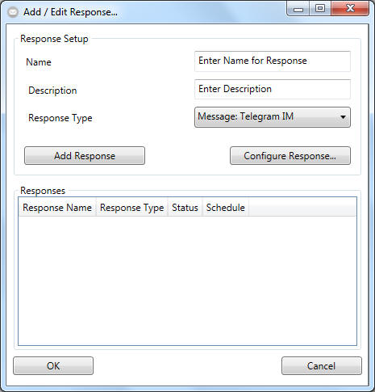

Creating Responses - New Response

- Please choose a unique name for your new response.
- Not mandatory: you could add a description to the response wich will be
shown in the "add response" overview window when hovering over the response
with your mouse arrow.
- Select your desired type of response:
- "Device: KNX":
interact with bus-driven-devices like relays, light switches and much
more from "knx" systems.
- "Message EMail":
Will send an EMail to one or more reciepents
- "Message: Telegram IM":
Will send instant messages to mobile devices (WhatsApp like)
- Click on "Configure Response" to setup you desired response
- Clicking "Add Response" will add the response to the queue that will be
processed when the event is fired.
- By clicking the "OK" Button your entire queue will be added to your
event.
 BE AWARE: You could only add responses that has been configured beforehand.
BE AWARE: You could only add responses that has been configured beforehand.